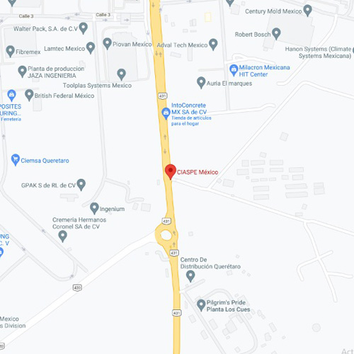

¿Donde encontrarnos?
CIASPE es una ONG que trabaja con diversos grupos y colectivos, con el fin de fortalezer sus capacidades de autogestión, resiliencia y soberanía. Promovemos el bienestar familiar y comunitario a trávez de prácticas Agro-ecológicas, regenerativas y estrategias integrales de vida sustentable.
Dirección: Carretera a los Cues, El Marqués, 76246 Qro.
